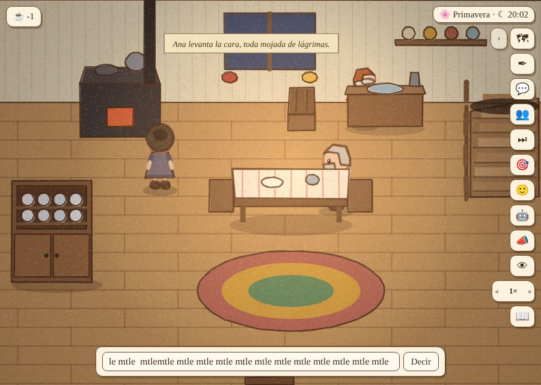
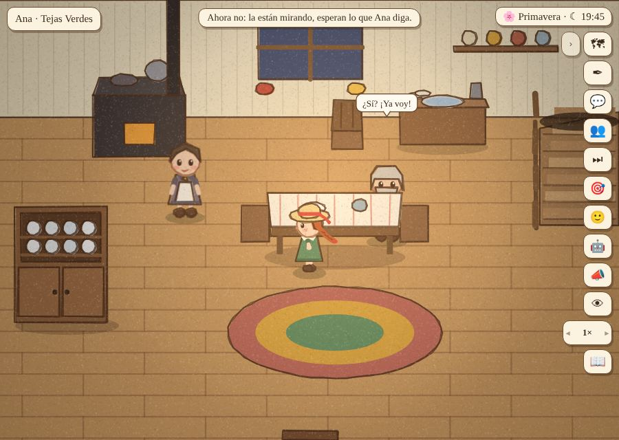
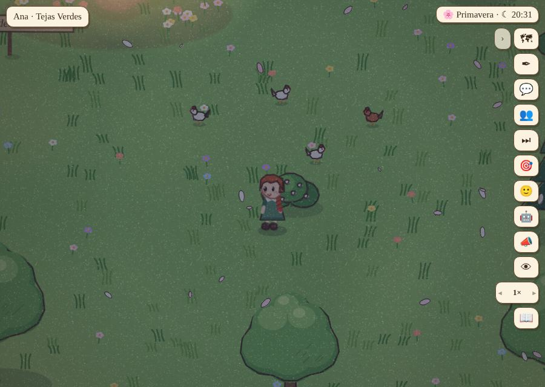
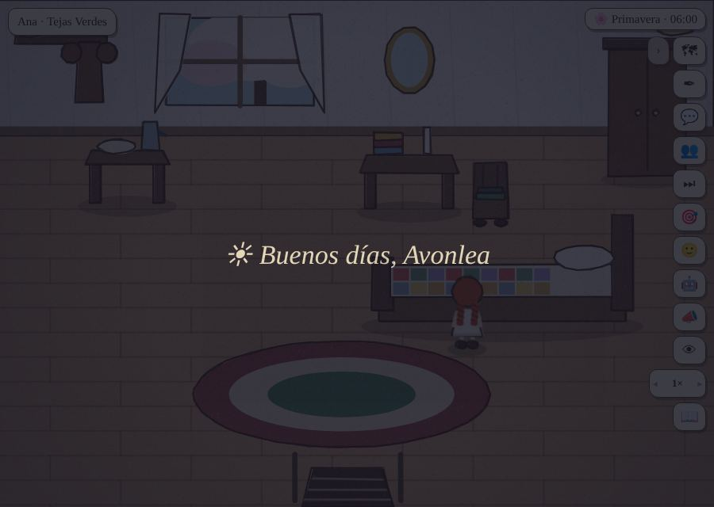
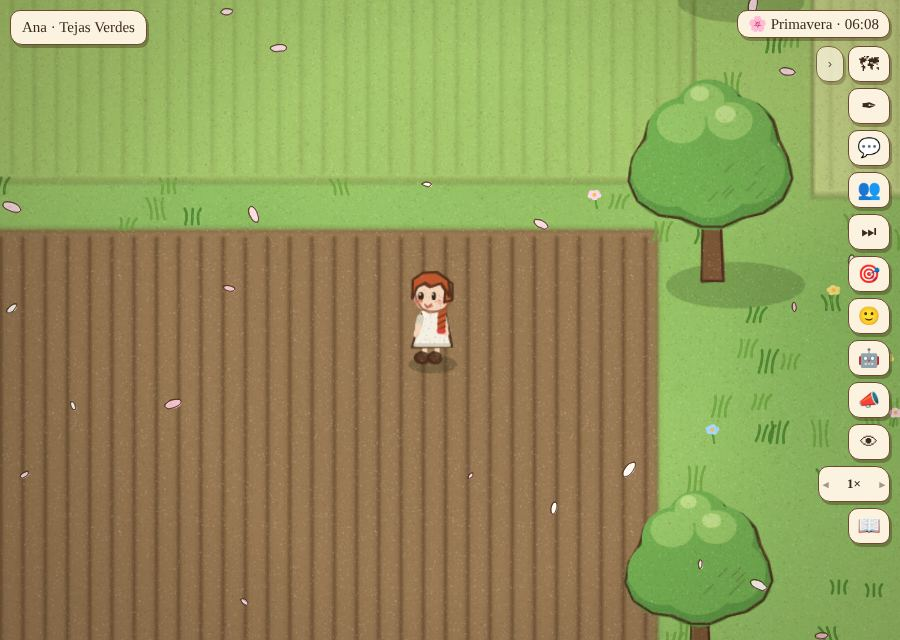
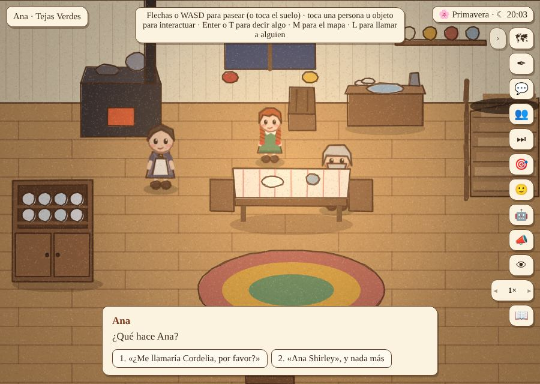
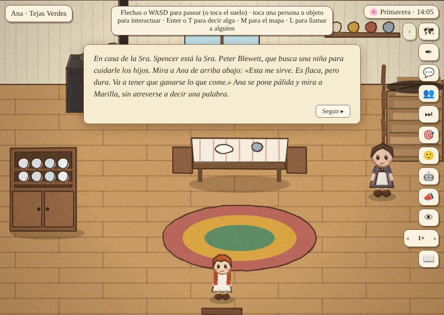
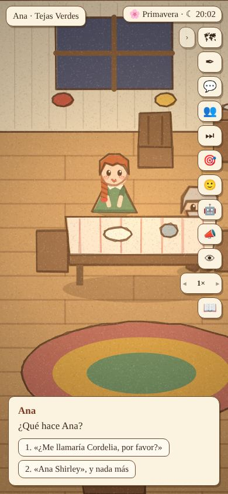
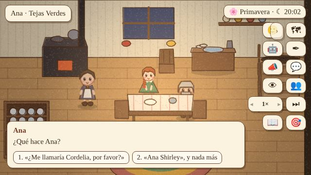
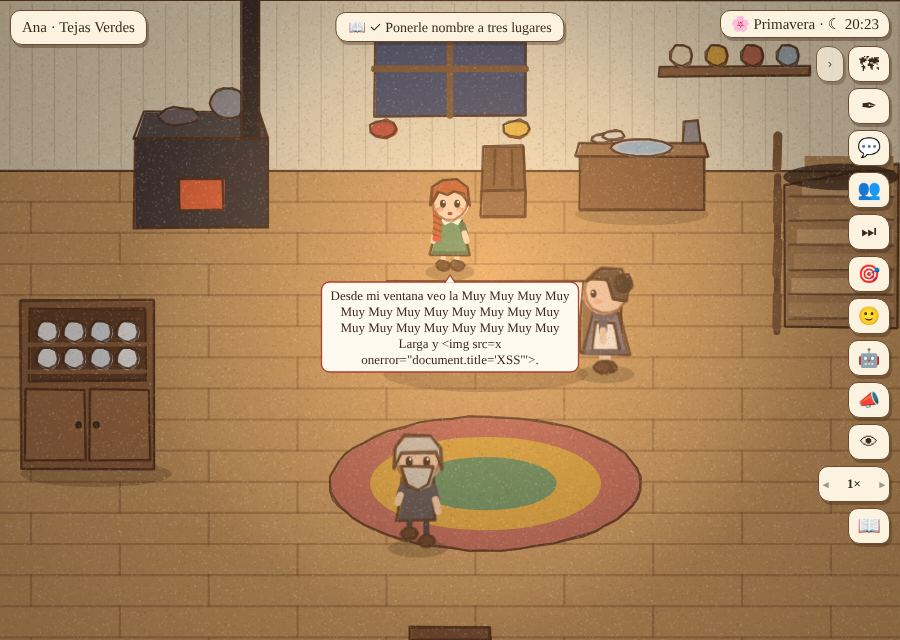

Partida 3 · lo inesperado
Nueve jugadoras que hacen lo que nadie espera, cada una en un navegador nuevo, tocando la pantalla y apretando teclas. Después de cada paso, el juego se revisa solo (invariantes): que no haya errores ni posiciones imposibles, que no haya dos escenas a la vez en un lugar, que el tiempo avance salvo que algo espere a la jugadora y que ninguna caja quede sin salida. Las pruebas están en tools/caos.js y se pueden correr de nuevo después de cada cambio. ← Partida 2
Las jugadoras
| Jugadora | Qué hizo | Qué pasó | Arreglo |
|---|---|---|---|
| Impaciente | Durante la llegada aprieta todas las teclas (Esc, Enter, Espacio, M, T, L, E), camina con las flechas, toca la pantalla al azar y hace doble clic en las elecciones. | Grave (atasco): con los toques al azar, Ana subió a su pieza en medio de la llegada. La escena siguió en la cocina, esperando una elección que nunca llegaba: quedó detenida en la línea 16 de 36 para siempre, y la historia no avanzaba más. | Mientras una escena de esa pieza todavía necesita a Ana (le quedan líneas o una elección), la puerta, la escalera y el mapa no la sacan («Ahora no: la están mirando…»). Tampoco se abre su menú de quehaceres. |
| Fugitiva | Después del tutorial no sube a acostarse: sale por la puerta y se va lejos, de noche. | Nadie la iba a buscar. Se perdía la primera noche del libro (tirarse en la cama, las buenas noches de Marilla) y amanecía en su cama como si nada. | A las 21:00, una tarjeta: «Ya es noche cerrada. Marilla toma la vela, busca a Ana y la lleva hasta la pieza del alero». Ahí empieza la primera noche. |
| Rebelde | El segundo día sale en camisón sin desayunar y se pasa el día lejos. | Si Ana no pasaba por la cocina, no había desayuno, y sin desayuno no había viaje a White Sands: la historia se quedaba quieta. | Desde las 6:30, si Ana anda por Tejas Verdes, Marilla la llama a desayunar («Huele a pan tostado en toda la casa…»). Si está lejos, el viaje espera al día siguiente: es su decisión. |
| Recargas | Cierra y abre el juego en el peor momento: en la primera tarjeta, en una elección, durmiendo y en medio del viaje. | Grave: la escena que se estaba diciendo quedaba como «ya dicha» y se perdía. Si era la llegada, la cocina quedaba en silencio para siempre. Y al retomar una elección, el juego se caía. | Al guardar, las escenas en curso se guardan con la línea en que iban y siguen desde ahí. También se guarda cuando la pestaña pasa a segundo plano (en el teléfono casi nunca se «cierra» el juego). |
| Tiempo | Pone el tiempo a 50× con una elección abierta y aprieta + y − muchas veces. | Nada: con una elección abierta el tiempo no avanza, y la velocidad queda entre ¼× y 50×. | — |
| Nombres | Le pone nombres raros a las cosas: vacío, larguísimo, con emojis, con código HTML, o el nombre de otra cosa del libro. | Nada grave: el nombre vacío no se acepta, el HTML no se ejecuta y los emojis se ven bien. Si llamas «el Lago de las Aguas Brillantes» al valle, los textos quedan confusos, pero es elección de la jugadora. | — |
| Teléfono | Cambia a pantalla de teléfono, vertical y horizontal, en plena escena. | Los cuadros de narración quedaban debajo de los botones. La caja de elección se salía 4 px por la derecha. En horizontal, los botones tapaban las opciones. | Los cuadros se centran en el espacio libre, la caja ya no se sale, y en pantallas bajas la caja se corre a la izquierda y se achica. |
| Metiche | En plena llegada toca a Marilla, abre el mapa, llama a Matthew, abre el cuaderno y toca a Ana 15 veces. | Tocar a Ana abría «¿Qué hago? Lavar los platos…» en medio de la llegada. | Mientras la escena la necesita, el menú de Ana no se abre. |
| Ropa | Camisón a mediodía, se viste y se desviste, el sombrero 20 veces, la cama a mediodía. | Nada roto: a mediodía la cama dice «Todavía no tengo sueño», y el armario la viste. Pero nadie comenta si Ana anda en camisón por la cocina (queda como idea). | — |
Fotos










Cómo se prueban los juegos
En los estudios se combinan varias clases de prueba; cada una encuentra cosas que las otras no ven.
1. QA funcional (los «testers»). Personas que juegan cada versión siguiendo listas de casos («abrir el cuaderno en plena escena», «cerrar el juego durmiendo») y reportan cada error en una base de datos (Jira, por ejemplo). Un buen reporte dice: versión, pasos para reproducir, qué se esperaba, qué pasó, con qué frecuencia (3 de 5 veces) y una foto o video. Se clasifica por gravedad (atasco o pérdida de partida: lo peor; texto mal escrito: lo menor) y prioridad.
2. Prueba exploratoria y «de mono». Sin guion: alguien con experiencia busca romper el juego a propósito (lo que hicimos en esta partida). Su versión automática es el monkey testing: un programa aprieta botones al azar durante horas y avisa si el juego se cae o se queda pegado.
3. Pruebas de regresión y automatizadas. Cada vez que se cambia algo, se vuelve a probar lo que ya funcionaba, para que un arreglo no rompa otra cosa. Muchos estudios tienen bots que juegan solos cada noche (Ubisoft, Sea of Thieves de Rare, juegos de EA): recorren niveles, revisan que las misiones se puedan terminar y miden el rendimiento. Aquí son tools/auditoria.js (cada acción del juego, 132 pasos) y tools/trace_goal.js (las 71 metas).
4. Playtesting (lo que se siente). Ya no se trata de errores: ¿se entiende?, ¿emociona?, ¿aburre? Se trae a jugadoras del público al que va dirigido el juego, juegan sin ayuda y se las observa (a veces con el método de pensar en voz alta). Después se les pregunta. Con 5 o 6 personas aparecen la mayoría de los problemas. Microsoft popularizó el método RITE: arreglar entre una sesión y la siguiente, como hicimos entre la partida 1 y la 2. Los diarios de partida 1 y 2 son una simulación de esto, con una jugadora inventada; no reemplazan a personas reales.
5. Datos de juego (telemetría). Con el juego publicado (alfa, beta, acceso anticipado) se registra lo que hace la gente: dónde abandona, cuánto tarda, qué elige. Sirve para ver cosas como «el 40% no encuentra la escalera».
6. Compatibilidad, rendimiento y certificación. Distintos teléfonos, pantallas y navegadores; que no se ponga lento; y, en consolas, los requisitos de Sony, Microsoft y Nintendo. Las traducciones también se prueban aparte (textos cortados, género, contexto).
7. Pruebas de humo y de resistencia. Humo: una revisión rápida de que la versión nueva arranca y se puede jugar lo básico antes de probar en serio. Resistencia (soak): dejar el juego corriendo horas para ver si se pone lento o se cae.
Para Avonlea, lo que más rendiría ahora:
- Hacer sesiones con 3 a 5 personas reales del público (lectoras de Ana, de distintas edades), sin explicarles nada, mirando en silencio y anotando dónde dudan.
- Agregar un registro simple de qué eligen y dónde se detienen.
- Correr
tools/caos.js, la auditoría y las metas antes de cada versión.